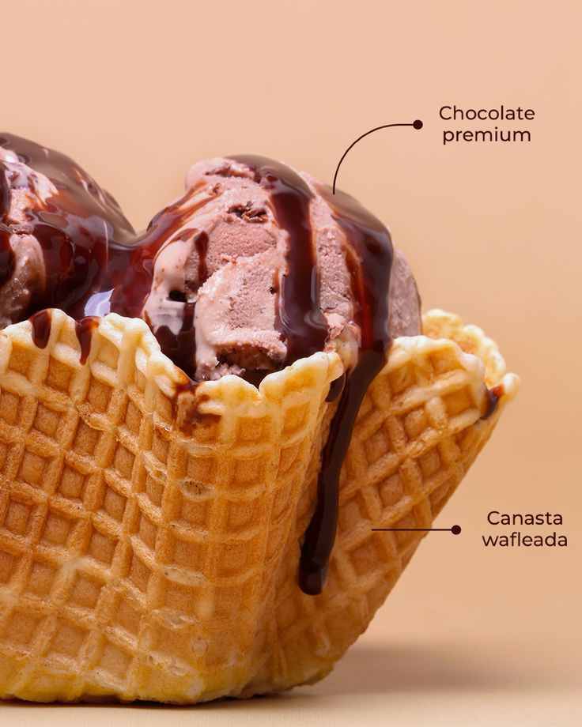

Pastel de Chocolate
Un clásico irresistible con cobertura de ganache.

Galletas con chispas
Suaves por dentro, crujientes por fuera.

Helado artesanal
De frutos rojos y trocitos.
Mini Pie de Limòn
Una base dulce mezclada con el exquisito àcido del limòn.